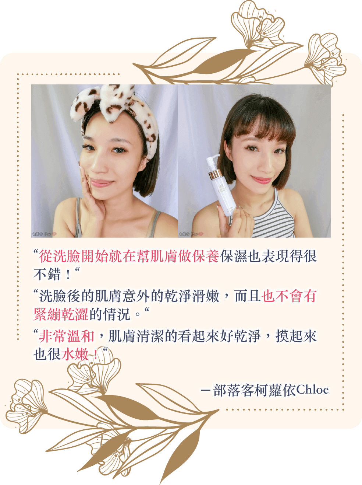

業界首創！
潔顏同時補充HSP
隨著年齡增長，肌膚逐漸變得更加敏感脆弱。不知不覺臉上充滿黑斑暗沉、小細紋、肌膚鬆弛，各種問題接踵而來。嘗試過各種方法皆無疾而終…
於是我下了決心，想要製作出能夠讓後天性敏感肌的女性也能安心使用，並能夠對抗年齡問題的產品。我以自己的肌膚當做實驗品，反覆測試多次，花了將近3年的錯誤嘗試之後，開發出這款洗臉的同時就能補充HSP的創新產品。
請相信施特佩一次，絕對會讓妳的肌膚再次散發動人光彩。
CEO Profile
Natural Beauty House
株式會社 常務董事
MIKA SAGAMI
佐上 美佳
1967年2月22日 出生
日本醫學報告指出，HSP (Heat Shock Proteins，熱休克蛋白或熱激蛋白) 能修復受到紫外線、熱能和壓力而損傷的蛋白質，並賦予肌膚活力。
當外界壓力施加到我們的皮膚，人體會自動在體內製造HSP來對抗壓力，修復受損蛋白質。所謂溫泉的美肌效果，便是源自於溶解老廢角質並製造HSP的換膚作用，長期浸泡可令肌理更為細緻。
施特佩HSP扭轉奇蹟植萃泥膜以獨家製法從酵母中萃取HSP成分，協助體內HSP運作，舒緩肌膚壓力，有效提升肌膚彈潤光澤。
極緻美肌體驗見證
